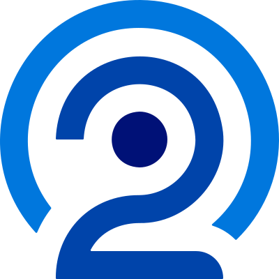

Duplicate Groups
4,632
Median records per group
2
Origin Timespan = Days since podcast was originally published. Publish Timespan = Days between oldest and newest episodes.
Analysis performed on 2026-10-11 08:28:46 AM UTC